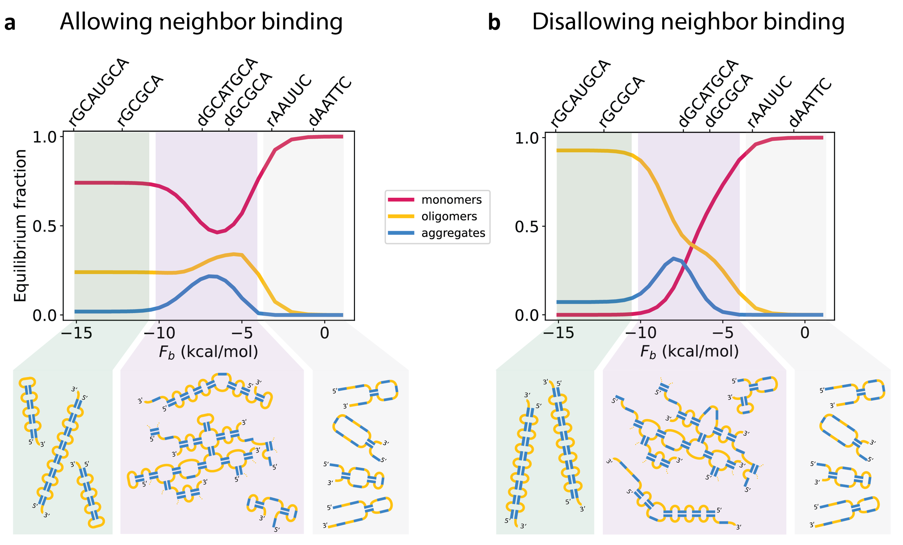

Why do RNA molecules form condensates?
RNA molecules form intramolecular structures and also bind to one another. Fascinatingly, RNA molecules were recently found to form very large complexes made up of thousands of RNA molecules bound to one another. These are called “condensates” or “aggregates”. Because this behavior was only discovered relatively recently (the seminal paper is by Jain & Vale, Nature, 2017), even the basics remain somewhat of a mystery. A major question that motivated this work was: Why do RNA molecules aggregate at all?
We focused on a particular kind of RNA molecule that Jain & Vale showed forms aggregates under certain conditions. These “repeat RNA” are chains of repeating nucleotides, namely CAG or CUG repeats. For example, the sequence CAGCAGCAGCAG would be a 4x CAG repeat. Jain & Vale showed that RNA molecules comprised of >30x repeats aggregate, but those with fewer repeats don’t. We wanted to understand this phenomenon for two reasons: 1) This cutoff of ~30x repeats is quite similar to a feature of certain neurological disorders such as Huntington’s and ALS. We all have sections of our DNA or RNA that are comprised of a certain number of CAG or CUG repeats, but people with too many repeats in a row (typically ~30 or so) are at an increased risk of developing these neurological disorders. Jain & Vale argue that this may not be a coincidence, and that RNA aggregates may contribute to Huntington’s and ALS. 2) That RNA molecules form condensates increasingly appears to be quite generic and a major mechanism by which our cells organize themselves. Our hope is that by understanding this simple case of repeat RNA, we can uncover generic rules applicable to RNA molecules more generally.
For these reasons, we wanted to understand the aggregation behavior of repeat RNA. Why do only these longer RNA molecules aggregate, and how would this cutoff of ~30 repeats change if we changed the RNA sequence (e.g. instead of CAG repeats, we could consider CCAGG repeats, or CAAG repeats). Because the experiments (and also computational “molecular dynamics” simulations that demonstrated the same behavior) are fairly time- and labor-intensive, we sought to find a general analytical framework through which to understand this system.
We addressed this problem through the lens of equilibrium statistical mechanics. The main challenge was finding a formula to describe how happy an RNA molecule is when it is folded on itself (a monomer), bound to another RNA (a dimer), or part of a larger structure (a trimer, tetramer, etc.). Happiness – by which I really mean “free energy”, or, if you want to be even more precise, the “partition function” – is determined by two factors: the energy (how many bonds can the molecule satisfy) and the entropy (how many ways can it satisfy these bonds). We found an analytical model for the partition function of RNA as a function of the number of other RNA molecules with which it is complexed. For example, the partition function for a 100-mer would be a quantitative measure of how happy a group of 100 RNA molecules is when they are all part of the same structure. [To be clear, each of these 100 molecules doesn’t have to be bound to all other 99 molecules, but a structure is defined such that by tracing the bonds, you can get from any of the molecules in the structure to any other]. By calculating these partition functions, we can quantitatively evaluate whether an RNA molecule prefers to be on its own (a monomer), bound to another RNA as a dimer, or bound to some large complex. We worked hard to test our partition function calculation against a more comprehensive computational enumeration of structures (Fig. 2) and ultimately, our formula requires no fitting parameters. [To be more precise, the analytical formula required one fitting parameter, but that parameter was fit for self-consistency to our computational enumeration model which is simply a more accurate calculation of the analytical formula, such that our predictions in Figs. 3, 4, 5 ultimately have no fitting parameters whatsoever].
What we found was quite surprising (at least to us). To understand the surprise, let’s start with something that wasn’t surprising: if bonds between RNA molecules are very weak, the RNA prefers to be a monomer. And as the bonds get stronger, the RNA prefers to be bound into larger and larger structures. But then (and here’s the surprising part) if the bonds get too strong, the RNA stops wanting to be part of larger structures, and prefers to be in monomers or dimers (Fig. 4). Why is this? Because the RNA is able to satisfy all of its bonds as a monomer or a dimer, there is no energetic benefit to forming condensates. Condensate formation turns out to be driven by entropic considerations: there are many more ways to satisfy the same number of bonds in condensates than there are in dimers. However, that entropic benefit is especially large when the RNA prefers to not have all its bonds satisfied. Therefore, when the bonds are very strong and the RNA prefers to satisfy all of them, the desire to form condensates is lessened, and (if the concentration of the RNA isn’t too high) the RNA prefers to form monomers and dimers instead.
In addition to answering this fundamental question about RNA condensates, we sought to understand the repeat RNA system more specifically. We showed that we are able not only to recapitulate Jain & Vale’s results and the results of computationally-intensive molecular dynamics simulations with an analytical formula (Fig. 3), but that this formula can then be generalized to arbitrary repeat sequences, thus yielding the complete “phase diagram” of the system (Fig. 5). In other words, for any repeat sequence of this kind, our formula can predict when the RNA would prefer to form small complexes like monomers and dimers, and when it would prefer to form aggregates.